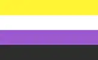
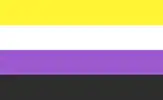

About me and this website!
Poesu is short for 'the poet of the sun'. I came up with this pseudonym because I used to write poetry.
But you can call me El, Merlyn, or Merle (they/he), I'm a 20-something artist and anarchist.
There're so many things I'm interested in that occasionally I feel torn apart between all of them. Doesn't help that I'm such an autie snail, you know?
I'm trans  , nonbinary , polyamorous
, nonbinary , polyamorous  , and demisexual
, and demisexual  . All my creative works are inherently queer, my queerness and art are inseparable.
. All my creative works are inherently queer, my queerness and art are inseparable.
My biggest passion is drawing. I like all kinds of mediums, and if I could, I'd practise them all: Watercolour, ink, pastels, oil, gouache. Each fascinating in their own way. I've also begun sketching on my phone with just fingers, but there's nothing interesting to show yet.
Art aside, my ways to relax are either cycling for dozens of kilometers on a bicycle or sitting on the riverbank for hours, dipping my feet in the water. Nature is easy to connect to and communicate with.
I adore cycling, it's my special interest. Riding a bicycle feels liberating—I couldn't go anywhere I want, escape from everything I did not want. It's my safe space.
I guess I could call HTML my special interest as well, it just sucks me in and I can't help it. Probably its magic it's what it also gives you freedom to do whatever you want, construct your home brick by brick.
The little problem is (or was) that I love to draw, but I'm not fond of socializing.
So here comes your generic IndieWeb/SmallWeb newbie part. For a long time I've sticked to social media to no avail. It always was a chase after followers and likes, and these numbers pushed any meaningful ideas out. I never liked to promote myself.
And when I stumbled into the IndieWeb, I got inspired by all those enthusiastic folks doing what the love. It finally occured to me that showing off my art doesn't have to bring misery, and that's my way of doing it with pleasure—by building my own website.
There are rules I want to set for this space. Kick me in the butt if any of these ever happen:
- No tracking and analytics.
- No ads. Never.
- No self-censorship.
- No likes and views.
- No pop-ups and excessive JavaScript.
- Performance, accessibility, and backwards compatibility are top priorities.
- Don't strive to look 'professional', whatever that means.
Generally I'll post my art here first and sometimes maybe some long ass posts ('cuz writing is awesome). I'll go back to old posts and update them if needed, it's a permanent work in progress (looking at you, digital gardens). Please feel free to reach out by Mastodon or email, I'm open to feedback or maybe you just wanna chit-chat, I'm here for ya! For technical stuff, here's a Github where you are welcome to open issues and make suggestions, I'm no programmer after all. And I love to collaborate and work in a team, so I'm eager to hear about your creative projects.
In case you like my art, consider a donation or a commission ♡
As a thanks for hearing me out, here are my two little rascals c:


| All | Next ↠ | |
|---|---|---|
| September 6, 2024 Art manifesto |